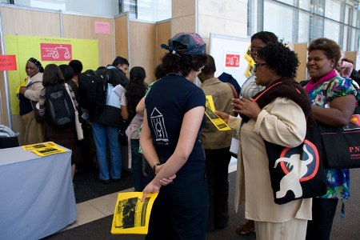
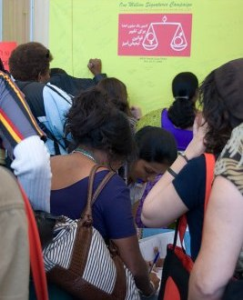

|
|
کمپین یک میلیون امضا در کنفرانس Awid
سه شنبه28 آبان 1387
تغییر برای برابری - کنفرانس Awid از تاریخ 14 تا 18 نوامبر با شرکت گروه ها و سازمانهای مختلف فعال در حوزه زنان از کشورهای مختلف در شهر کیپ تاون آفریقای جنوبی برگزار شد.

در اولین روز این کنفرانس به دعوت سازمان زنان در حین توسعه(AWID) نشستی با حضور شیرین عبادی و تعدادی از فعالان کمپین یک میلیون امضا،برای معرفی این کمپین به عنوان نمونه ای از فعالیت های مسالمت آمیز باری تغییر قوانین تبعیض آمیز برگزار شد.
ابتدا شیرین عبادی درباره جنبش زنان ایران و پیشینه و شیوه های کاری آن سخنرانی کوتاهی داشت و سپس 4 نفر از اعضای کمپین تجربیات خود و شیوه های عمل کمپین را با مخاطبان مطرح کردند. این گفتگو با معرفی کمپین یک میلیون امضا برای تغییر قوانین تبعیض آمیز آغاز شد و پس از آن درباره موضوعاتی چون شیوه چهره به چهره برای جمع آوری امضا، استفاده از خلاقیت های هنری برای برقراری ارتباط بیشتر با مردم، استفاده گسترده از تکنولوژی های ارتباطی بین اعضای کمپین و توانمند شدن زنان در طول فعالیتشان در کمپین در برقراری ارتباط مجازی و همچنین چالش ها و فشارهای وارد شده به کمپین، حضور سه نسل از فعالان زن و همچنین حضور مردان در این کارزار بحث و گفتگو شد.

از دیگر نکات مطرح شده در این نشست یک می توان به شیوه تصمیم گیری و رهبری در کمپین اشاره کرد که عدم وجود یک فرد و یا گروه تصمیم گیرنده نظر مخاطبان را به خود جلب نمود. دومین نکته مورد توجه مساله قابلیت ها و توانایی های زنان و دختران ایرانی و حضور آنها در حوزه های مختلف دانشگاهی، اجتماعی است.
اما مهمترین نکته ای که در این جلسه مطرح گردید، مسایل مالی و روش های درآمد زایی کمپین است که خود منجر به عدم وابستگی اقتصادی کمپین یک میلیون امضا به سازمان ها و ارگانهای مختلف می شود. این مبحث مورد استقبال بسیاری از شرکت کنندگان در نشست واقع شد.
در این نشست فعالانی از کشورهای مختلفی چون هند، بحرین، کویت، آفریقای جنوبی، مصر، فلسطین، لبنان، سوریه، مراکش، آلمان، فرانسه،کانادا و غیره حضور داشتند.